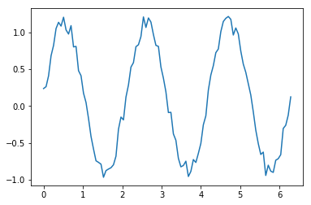

[1]:
%matplotlib inline import numpy as np import matplotlib.pyplot as plt N = 100 x = np.linspace(0,2*np.pi,N) f = np.sin(3*x) + 0.25*np.random.random(N) plt.plot(x,f,'-')
[<matplotlib.lines.Line2D at 0x7f323aee6e10>]

[2]:
import urllib.request response = urllib.request.urlopen('http://www.ucla.edu/') html = response.read()